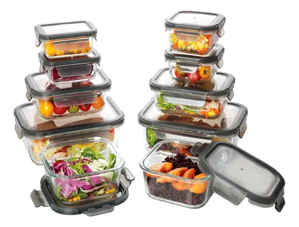

Deja de arruinar cortes caros: La importancia del termómetro digital

Hay una tragedia que ocurre todos los fines de semana en cientos de patios traseros: alguien gasta una fortuna en un hermoso corte de carne para el asador, lo pone al fuego, confía en el "método de tocar con el dedo" para saber si está listo, y termina sirviendo un pedazo de cuero seco a sus invitados.
Cocinar proteínas (ya sea en el asador, la estufa o el horno) no debería ser un juego de adivinanzas. Probamos un termómetro digital de lectura instantánea para demostrar por qué los chefs profesionales nunca confían en sus "instintos" cuando se trata del punto de cocción de la carne.
El mito de "Tocar la carne"
Durante años, revistas de cocina y programas de televisión han promovido el truco de presionar la base del pulgar para comparar la firmeza con la de un filete y adivinar su término. ¿El problema? Tu pulgar y un Ribeye de dos pulgadas de grosor no tienen la misma densidad. Es una técnica extremadamente inexacta que lleva a sobrecocinar la comida el 90% de las veces.
Con un termómetro de lectura instantánea, insertas la sonda en el centro del corte. Si marca 135°F (57°C), sabes con certeza absoluta que tu filete está en un perfecto término medio ("medium rare"). No hay debate. Retiras la carne, la dejas reposar y garantizas la perfección cada vez.
Asegura el punto perfecto en tu próximo asado
Ver precio del TermómetroMás allá del sabor: La seguridad alimentaria
Lograr la carne de res perfecta es excelente por motivos gastronómicos, pero cuando hablamos de pollo o cerdo, hablamos de salud. Nadie quiere servir pechuga de pollo cruda que pueda causar una intoxicación, por lo que la tendencia natural es cocinar el pollo "hasta que esté bien blanco por dentro".
Lamentablemente, el pollo se vuelve seco y asqueroso a los 180°F, pero es seguro para comer a los 165°F (74°C). Esa pequeña ventana de temperatura es la diferencia entre un pollo jugoso que disfrutas y un pollo que necesitas pasar con un litro de agua. El termómetro elimina el miedo a la intoxicación alimentaria, permitiéndote sacar el pollo exactamente cuando es seguro y a la vez jugoso.
Lo que debes saber antes de comprar
El modelo que evaluamos es de "lectura instantánea". Esto significa que te da la temperatura en unos 2 o 3 segundos. Su principal limitación es que no puede dejarse dentro del horno. El plástico se derretirá. Sirve para abrir la puerta, pinchar la carne rápido y volver a cerrar.
Si tu intención es asar un pavo entero o un cerdo a fuego lento durante horas, te convendría más un termómetro "con cable" (donde la sonda metálica queda en el horno y la pantalla fuera). Sin embargo, para sartenes, parrillas y freidoras de aire, la lectura instantánea estilo pluma es la herramienta más ágil.
Veredicto
Es muy frustrante arruinar cortes costosos de carne o servir pechugas secas. Por una inversión mínima, el termómetro digital es como comprar un seguro contra desastres en la cocina.
No importa si te consideras un parrillero experto; los verdaderos maestros del asado siempre miden la temperatura. Este es un electrodoméstico pequeño pero fundamental que mejorará drásticamente la calidad de tus comidas principales.